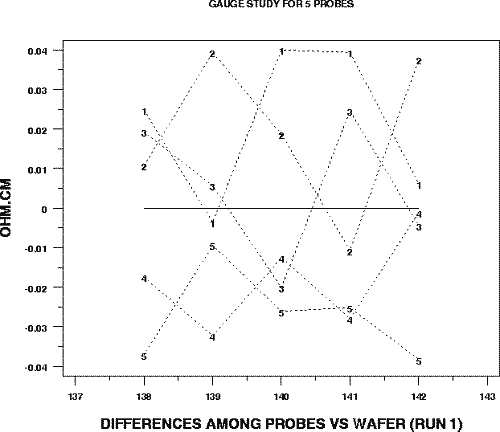
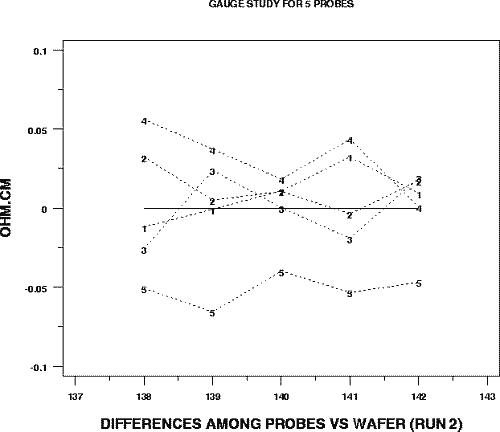

|
2. Measurement Process Characterization 2.6. Case studies 2.6.1. Gauge study of resistivity probes 2.6.1.5. Differences among 5 probes |
| Run 1 - Graph of differences from wafer averages for each of 5 probes showing that probes #2062 and #2362 are biased low relative to the other probes |

|
| Run 2 - Graph of differences from wafer averages for each of 5 probes showing that probe #2362 continues to be biased low relative to the other probes |

|